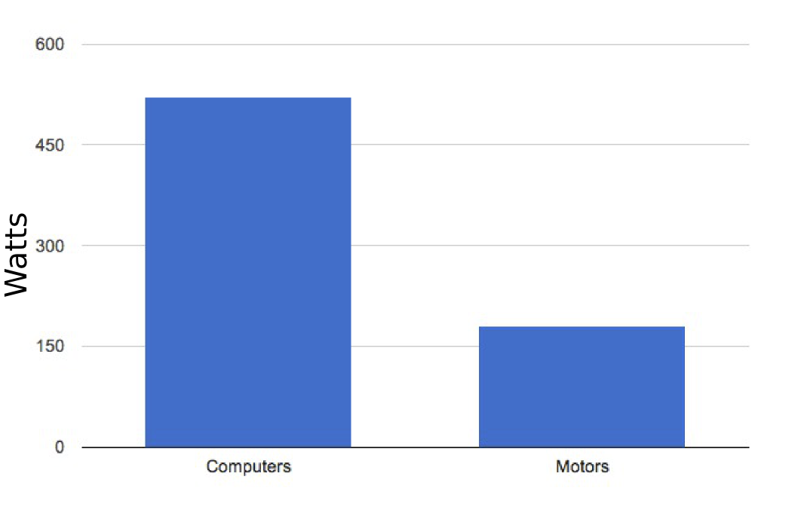
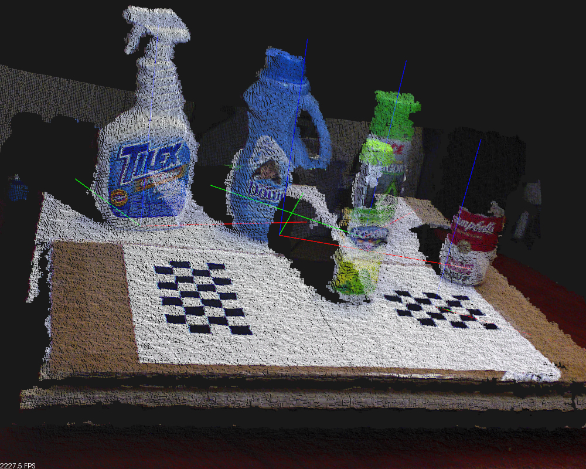
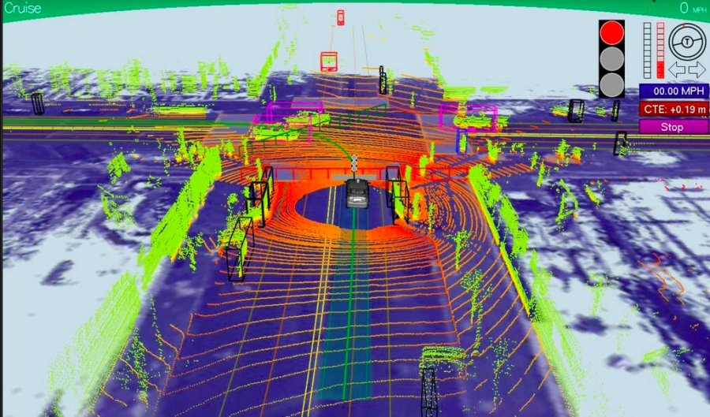
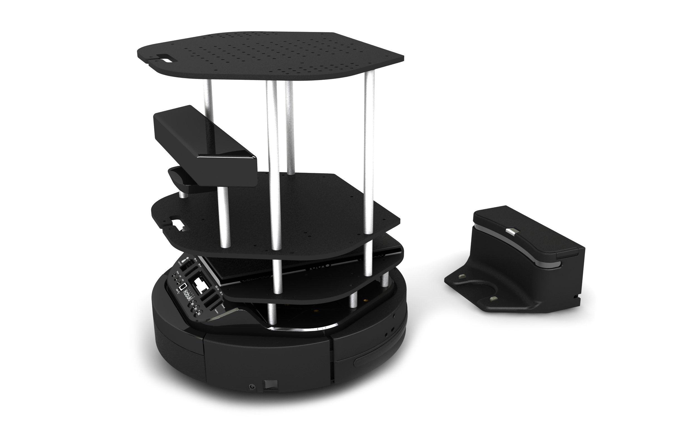
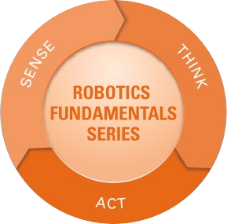
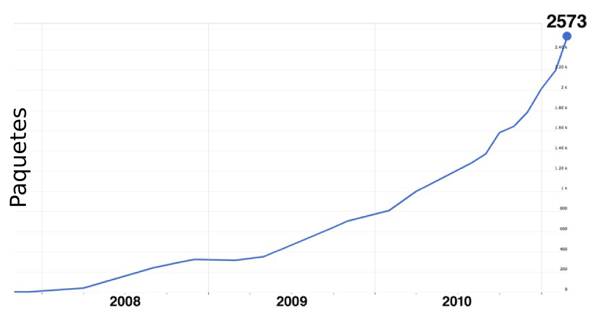

Robótica Hoy
SERENDIPITY
Febrero 2014
PETER NORVIG

Paradoja de
MORAVEC
Cambio de paradigma en la robótica


The Robot Operating System
Cloud Computing
UNCANNY VALLEY
It's not cute! It's a #@!ing spider!!!
humm...

...ahgg...

aaAAH!

The Uncanny Valley

Desafíos
 ...Cómo lo hacemos ahora
  Gracias!
robots.etoccalino.com